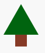

Pyret is a programming language designed to serve as an outstanding choice for programming education. It works effectively at many levels, with several curricula in active use incorporating Pyret. The language is under active design and development, and free to use or modify.
Quick Examples Curricula & Books For Developers More Examples
Designed for Getting Started
Pyret is designed from the ground up to run entirely in regular browsers with no installation at all, avoiding frustrating student-hours lost to installers and platform choice and IDE configuration and more. Indeed, Pyret is running right on this very page – check out the examples with the “Run It!” buttons!
examples "cube function": cb(0) is 0 cb(3) is 27 cb(-5) is -125 end fun cb(n): n * n * n end
Pyret provides a pleasant syntax for writing illustrative examples of how functions should behave. These serve not only as documentation, but are also useful for students to demonstrate their understanding of a problem before they start programming.
Programs that create images give immediate visual feedback. Functions that operate on images enable students to learn about function composition in an medium that is both engaging and educational.
treetop = triangle(60, "solid", "darkgreen") trunk = square(20, "solid", "brown") tree = above(treetop, trunk)
Curricula and Books
For grades 6-12 (secondary) students, our partners at Bootstrap are the leading designers of integrated computing curricula. All the Bootstrap curricula build primarily atop Pyret. Bootstrap covers numerous areas (with ties to algebra, data science, AI, physics, and more) and provides comprehensive materials that have been tested in thousands of classrooms and by tens of thousands of students every year. Bootstrap is also, by design, modular: you don't have to adopt a whole course, but can instead choose modules that fit best with what you're already teaching. Head over to Bootstrap to learn more!
Our book, Data-Centric Introduction to Computing (DCIC), provides a modern introduction to computing education. You can see some of the research [1, 2, 3] that has driven its design and content.
DCIC takes the position that introductory data science offers an interesting, accessible, and meaningful introduction to programming that addresses many problems that plague current introductory curricula. It then transitions from that to data structures. You can read our critique that inspired the book. Pyret offers various features that support this introduction and transition.
In particular, DCIC takes the position — driven by a significant body of literature in educational and cognitive science — that students learn programming better when they can compare and contrast related but different things. Thus DCIC teaches not one but two programming languages: Python in addition to Pyret. But the progression from Pyret to Python is (a) staged carefully to minimize difficulties, and (b) includes seeing them side-by-side. Pyret, in turn, is designed to facilitate this kind of comparison with Python
For Developers
Visual Studio Code and Github
Pyret has a Visual Studio Code extension that opens files in the same visual editor as the examples above. It works in Github Codespaces, github.dev, and desktop Visual Studio Code.
Embedding Pyret
All the examples above embed an instace of Pyret through its embedding library.
You can embed Pyret on your own websites and projects by
installing that npm package, which has an API for controlling and
listening to the embedded instance.
You can embed from our copies of the compiler and runtime, or serve
your own. No Pyret code runs on the server: it's strictly a bundle
of client-side HTML, CSS, and JavaScript (we've done a
little bit of engineering in this space to make this possible).
Command-line Pyret
Pyret runs from the command line via the pyret-npm package.
Nearly all libraries (including images) run the same offline and
in-browser. This can be especially important for grading student
code submissions in an automated way. THIS DOCUMENT (fill) says more
about it.
Programming Assignments and Starter Code
Pyret has specific libraries and features (FILL: url-file tutorial, Github example) for creating and deploying starter code for students seamlessly. We developed these features and workflows in our own courses, with our own TAs, and for our own curricula.